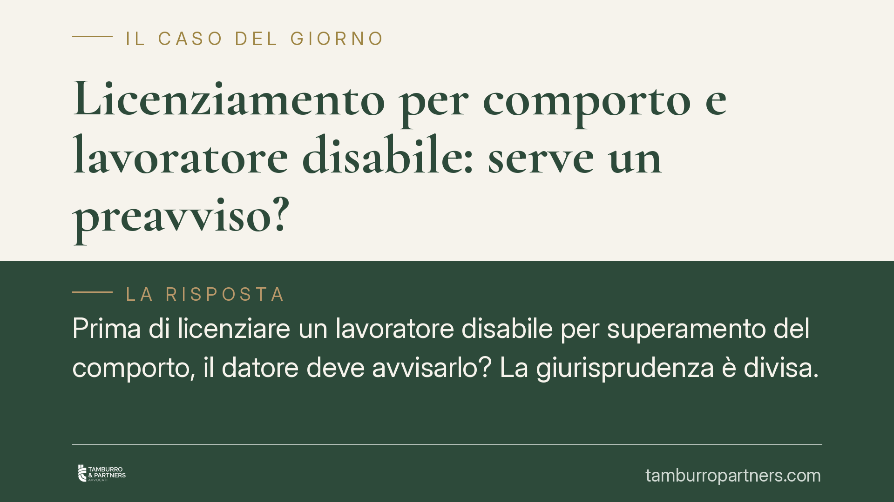

Licenziamento per comporto e lavoratore disabile: serve un preavviso?
Prima di licenziare un lavoratore disabile per superamento del comporto, il datore deve avvisarlo? La giurisprudenza è divisa. Alcuni tribunali leggono l'avviso come accomodamento ragionevole imposto dal diritto antidiscriminatorio, altri lo escludono. Restano decisivi la prova della patologia e la sua comunicazione all'azienda. Il punto sullo stato dell'arte.

Il fatto
Il "comporto" è il periodo entro cui il lavoratore assente per malattia conserva il posto. Superata quella soglia, fissata dai contratti collettivi, il datore può licenziare senza dover provare altro: basta il conteggio delle assenze.
La domanda che divide i giudici è più sottile. Quando il lavoratore è disabile e le assenze dipendono dalla sua patologia, il datore deve avvisarlo dell'imminente scadenza del comporto? Su questo Tribunale di Bologna, Corte d'Appello di Trento e Cassazione hanno espresso orientamenti non allineati.
Inquadramento normativo
La disciplina base è l'art. 2110 del codice civile, che consente il recesso una volta esaurito il comporto. Norma neutra: non distingue tra lavoratori disabili e non disabili.
Il problema nasce dall'incrocio con il D.Lgs. 216/2003, che attua la direttiva europea 2000/78/CE sulla parità di trattamento in materia di occupazione. L'art. 3, comma 3-bis, impone al datore di adottare "accomodamenti ragionevoli" per garantire ai disabili condizioni di lavoro paritarie. È l'obbligo, cioè, di modulare l'organizzazione aziendale per non penalizzare chi ha una disabilità, salvo che ciò comporti un onere sproporzionato.
Un lavoratore disabile, per la sua condizione, accumula più facilmente assenze e rischia di superare il comporto prima di un collega non disabile. Applicare la soglia in modo rigido può quindi tradursi in una discriminazione indiretta: una regola apparentemente neutra che colpisce in misura maggiore una categoria protetta.
Da qui la tesi di parte della giurisprudenza: l'avviso preventivo sarebbe un accomodamento ragionevole, coerente anche con i doveri di correttezza e buona fede (art. 1175 cod. civ.) e con il principio di solidarietà (art. 2 Cost.). Avvisare consente al lavoratore di chiedere ferie, aspettative o altre misure per evitare il superamento del limite.
Altri giudici obiettano che nessuna norma prevede espressamente questo obbligo di preavviso e che caricarlo sul datore rischia di trasformare il comporto in un istituto indefinito.
Implicazioni pratiche
Per il datore di lavoro la conseguenza è concreta: non basta più contare i giorni di assenza. Se il dipendente è o potrebbe essere disabile, il licenziamento automatico espone a un rischio di impugnazione per discriminazione, con possibile reintegra e risarcimento.
Due elementi restano però decisivi in giudizio. Primo: la prova della patologia, che deve avere un carattere di gravità riconducibile alla nozione di disabilità tutelata dal diritto europeo, non una malattia qualsiasi. Secondo: la comunicazione al datore. Se l'azienda ignorava la condizione di disabilità, difficilmente le si potrà rimproverare l'omesso accomodamento.
Per il lavoratore, la tutela non è incondizionata. Chi non ha reso nota la propria disabilità, o non è in grado di documentarla, rischia di vedersi respingere la domanda.
La divisione tra le corti significa una cosa sola: l'esito dipende molto dal foro e dalla ricostruzione dei fatti. In attesa di un consolidamento della Cassazione, la materia va trattata con prudenza da entrambe le parti.
Cosa fare in concreto
- Datori di lavoro: prima di avviare un licenziamento per comporto, verificate se il dipendente rientra tra i lavoratori disabili o se le assenze sono riconducibili a una patologia nota all'azienda.
- Datori di lavoro: valutate un avviso scritto sull'approssimarsi della scadenza del comporto e prospettate strumenti alternativi (aspettativa non retribuita, ferie residue), documentando ogni passaggio.
- Lavoratori: comunicate formalmente e per iscritto la condizione di disabilità, conservando la documentazione medica idonea a dimostrarne la gravità.
- Lavoratori: in caso di licenziamento, verificate entro i termini di decadenza la possibilità di impugnazione, valutando anche il profilo discriminatorio e non solo quello del computo delle assenze.
- Entrambe le parti: conservate le comunicazioni scambiate: in giudizio la prova della patologia e della sua conoscenza fa spesso la differenza.
---
*Contributo informativo a cura di Tamburro & Partners - Avv. Giuseppe Tamburro. Non costituisce parere legale.*
Ogni storia di lavoro ha i suoi tempi.
Se gestisci HR e vuoi un confronto su contenzioso, ispezioni o licenziamenti, scrivi allo studio. Ti rispondiamo entro un giorno lavorativo.